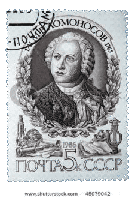
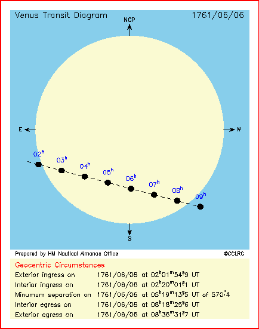
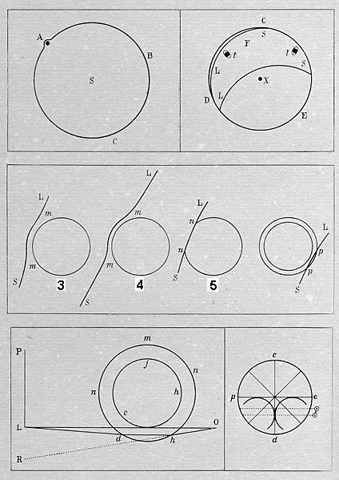
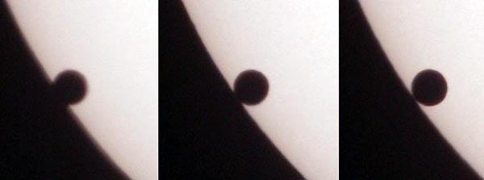
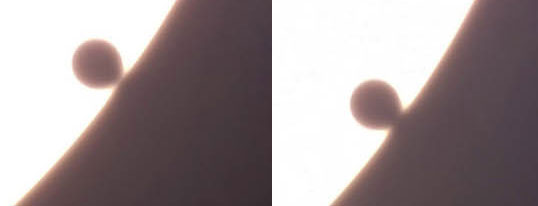
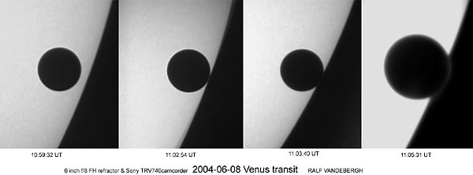
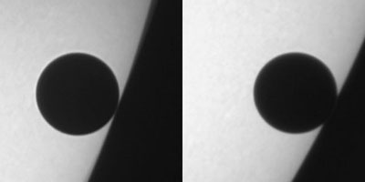
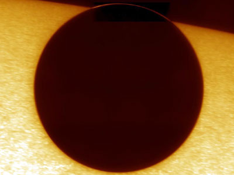

Видел ли Ломоносов атмосферу Венеры

В 2011 году исполняется 300 лет Михаилу Васильевичу Ломоносову, а также исполняется 250 лет со дня открытия им атмосферы Венеры.
Для наблюдения Венеры не требуется очень мощный инструмент. Размер Венеры 1 угловая минута - это 3% от диаметра Солнца. Чёрную точку Венеры на диске Солнца можно увидеть через закопчённое стекло невооружённым глазом.
6 июня 1761 года с 4 до 10 часов утра в своём доме в Петербурге Ломоносов наблюдал прохождение Венеры по диску Солнца. Использовалась зрительная труба из двух линз длиной 1.3м. Эта труба не сохранилась. Наверно, она была проще и имела меньший объектив, чем хранящаяся в музее раздвижная зрительная труба Ломоносова 1762 года.

Зрительная труба Ломоносова, 1762 г

1761 Transit of Venus
Прохождение Венеры по диску Солнца 1761 года было одним из первых событий, объединивших разные страны на основе научных интересов. Главной целью наблюдений было измерение параллакса Венеры и уточнение на его основе расстояния до Солнца. Наблюдения были организованы в Европе - Лондон, Вена, Париж, Петербург. Экспедиции были направлены в Австралию, Китай, Индию, Южную Африку. Ломоносов был одним из организаторов экспедиции в Сибирь.
В Петербурге наблюдения проводились в обсерватории академии наук. Ломоносов не участвовал в наблюдениях по измерению параллакса, а наблюдал Венеру в зрительную трубу с крыши своего дома на Мойке.
При наблюдении в зрительную трубу с увеличением 40-50 раз Венера кажется больше Луны. При этом на её поверхности нет деталей. Астрономы предполагали, что Венера имеет атмосферу, и плотно покрыта облаками. Возможно, Ломоносов обдумывал, какими могли быть признаки атмосферы. Благодаря этому он знал, на что нужно обратить внимание, и мог правильно дофантазировать подробности, которые на самом деле не видел или видел не ясно.
Он хотел внимательно рассмотреть явление, чтобы увидеть что-то
важное. Возможные не очень яркие подробности явления по сравнению
с ярким солнечным диском Ломоносов решил наблюдать через
"весьма не густо копчёное стекло" .
Для отдыха зрения от сильного света он решил наблюдать только вход Венеры на диск Солнца, и выход с диска Солнца.
"Любопытствовал у себя больше для физических примечаний"
"Намерился только примечать начало и конец явления и на то употребить всю силу глаза; а в протчее время прохождения дать ему отдохновение"
Из статьи Ломоносова Явление Венеры на Солнце, наблюденное в Санктпетербургской императорской Академии наук майя 26 дня 1761 года :
"Ожидая вступления Венерина на солнце около сорока минут после предписанного в ефемеридах времени, увидел наконец, что солнечной край чаемого вступления стал неявственен и несколько будто стушован, а прежде был весьма чист и везде равен"
"При выступлении Венеры из солнца, когда передней её край стал приближаться к солнечному краю и был около десятой доли Венерина диаметра, тогда появился на краю солнца пупырь (см. рисунок ниже), который тем явственнее учинился, чем ближе Венера к выступлению приходила (см. fig. 3 и 4). LS значит край солнца; mm выпуклистое перед Венерою солнце. Вскоре оной пупырь потерялся, и Венера показалась вдруг без края (см. fig. 5); nn отрезок, хотя весьма малой, однако явственной. Полное выхождение, или последнее прикосновение Венеры заднего края к солнцу при самом выходе, было также с некоторым отрывом и с неясностью солнечного края."

(original, size
600x745
)
Что видно в современный телескоп
Перед недавним прохождением Венеры по диску Солнца в 2004 году мы готовились увидеть ободок атмосферы Венеры. Вот что пишет Сергей Шанов на сайте Астронет:
"Наблюдая вступление на солнечный диск и схождение с него Венеры, обязательно обратите внимание на появление яркого ободка вокруг планеты, а также на характерную размытость её краев. Именно эти явления в 1761 году выдающийся русский ученый М. В. Ломоносов абсолютно точно интерпретировал как следствие наличия у Венеры плотной атмосферы. При прохождениях Меркурия таких эффектов обычно не наблюдается, так как атмосфера этой планеты крайне разрежена. Хотя иногда наблюдатели видели Меркурий или часть его на фоне неба и отмечали образование яркого ореола вокруг планеты."
Ободок не виден
Я думаю, что наблюдение ореола вокруг Меркурия можно объяснить как возможным прохождением Меркурия по светящейся солнечной атмосфере, так и психологическими причинами.
Есть ли в отчёте Ломоносова доля фантазии, или он описывает точно то, что видел? Почему 8 июня 2004 года почти никто не увидел яркий ободок вокруг Венеры в момент пересечения ею края Солнца?
Эта тема обсуждалась в астрономических форумах. Общий итог состоит в том, что нужно точнее понимать, что ты хочешь увидеть.
Вот пример видео без ободка атмосферы вокруг Венеры. Съёмка велась в один из лучших солнечных телескопов Swedish 1-m Solar Telescope .
Вот пример фотографии (Elio Daniele) в очень хороший телескоп диаметром 550мм. Мы не видим пупырь или яркий ободок при пересечении Венерой края диска Солнца.

The Venus Transit 2004
Elio Daniele , Gruppo Astrofili
O.R.S.A.
Apochrom. refractor Tele Vue NP101, 550mm - f/5.4 with AstroSolar
filter, Nikon D100 Camera
June 8, 2004, Palermo, Italy (size
871x323
)
В следующем примере, наоборот, край Солнца кажется вогнутым из-за эффекта чёрной капли .

The Venus Transit 2004
Mauro Auteri & Floriano Paglia
G.V. Schiaparelli Astronomical Observatory, Varese, Italy
SC 203mmm at f/10 + Webcam Toucam Pro. June 8, 2004 ; 11:02-11:04
UT
Динамический диапазон зрения гораздо больше, чем у фотоплёнки и у матрицы фотоаппарата. Иногда можно разглядеть то, что не видно на обычном фотоснимке. Можно сделать снимок лучше, если настроить экспозицию так, чтобы слабый эффект был правильно экспонирован. При этом яркий диск Солнца окажется засвеченным. Вот редкие кадры с хорошо различимым ободком по краю Венеры.

(size
1500x554
)

The Venus Transit 2004
Ralf Vandebergh
6-inch refractor f/8, Sony TRV740 camcorder
June 8, 2004, 11:00 - 11:05 UT, The Netherlands
Следующие самые убедительные фото и видео сделаны на Шведском солнечном телескопе. Для выделения ободка вокруг Венеры в нужной части кадра увеличены контраст и яркость.

Swedish Solar Telescope 1m (Контраст подобран)
За сто лет до Ломоносова в 1610 году, посмотрев на Сатурн в телескоп с 30 кратным увеличением, Галилей пришёл к выводу, что эта планета имеет ушки или выступы . Своё открытие он выразил так
"Altissimum planetam tergeminum observavi
Высочайшую планету тройную наблюдал"
Через два года Галилей увидел, что Сатурн круглый, как другие планеты. Затем ушки снова появились. В 1656 году, используя телескоп длиной 3.7 метра с диаметром объектива 6см, Гюйгенс смог ясно увидеть кольцо Сатурна. Хотя Галилей не говорил о кольце Сатурна, но первооткрывателем кольца является он.
Ломоносов правильно указал два признака атмосферы Венеры
- отсвет поверхности Венеры перед входом Венеры на диск
Солнца:
"солнечной край чаемого вступления стал
неявственен и несколько будто стушован"
- "ободок" в момент выхода края Венеры за край диска Солнца:
"появился на краю солнца пупырь"
После некоторого обсуждения к концу 18 века наличие атмосферы Венеры было признано европейскими астрономами. Сейчас приоритет открытия Ломоносовым атмосферы Венеры никем не оспаривается.
Можно ли 6 июня 2012 года всё же увидеть то, что увидел Ломоносов.
Возможно, разочарованные астрономы смогли бы увидеть "пупырь", если бы, как Ломоносов, использовали мало закопчённое стекло , не позволяющее толком разглядеть солнечные пятна, но позволяющее заметить ободок атмосферы Венеры и заметить секундное помутнение точки контакта Венеры с краем Солнца. Для фотографирования можно было, как Ralf Vandebergh, рискнуть матрицей и увеличить экспозицию.
Внимание! Используйте правильный плотный светофильтр! Не направляйте фотоаппарат на Солнце без фильтра на объективе! Не смотрите на Солнце в оптический инструмент без плотного фильтра на объективе! Наличие атмосферы Венеры уже доказано. Ободок вокруг Венеры уже сфотографирован.
Е.Корниенко, 2011-02-19